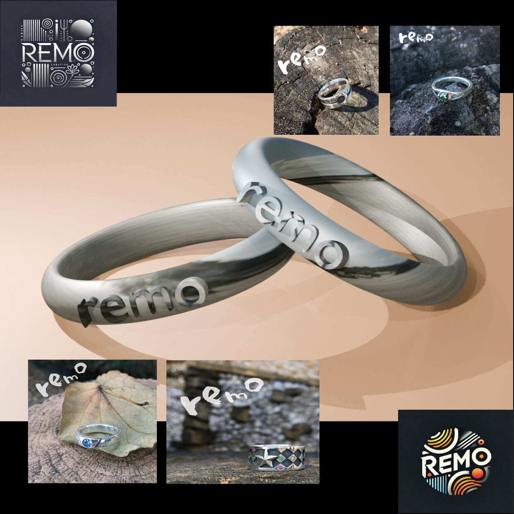
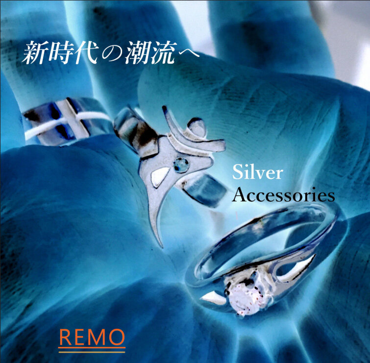
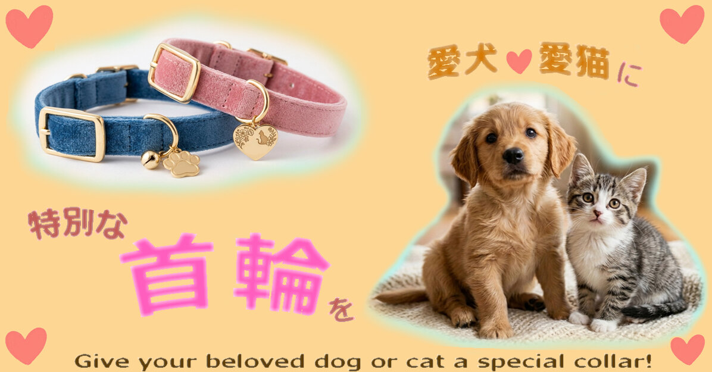

REMOブランドビジュアル
ロゴマーク設計と、商品写真への演出加工を一貫して制作。
2F ― GRAPHIC DESIGN
LOGOS, VISUALS & BRANDING
ロゴマークの設計から商品写真の演出、ECサイト用バナーまで。「もの」の魅力を伝えるための平面構成を独学で磨き続けています。シルバーアクセサリーだけでなく、ペット用品や日用品など、幅広い商材のビジュアル制作にも対応しています。

REMOブランドビジュアル
ロゴマーク設計と、商品写真への演出加工を一貫して制作。

Silver Accessories バナー
ECサイト・SNS広告を想定したメインビジュアル。

ペット首輪 広告バナー(架空商品での自主制作)
日英併記での訴求。
このジャンルのお問い合わせ・お仕事依頼は、件名にジャンルを記入の上、ここからお願いします。
お問い合わせする メールが開かない場合は、こちらへ直接お送りください:sun00shigeki@yahoo.co.jp